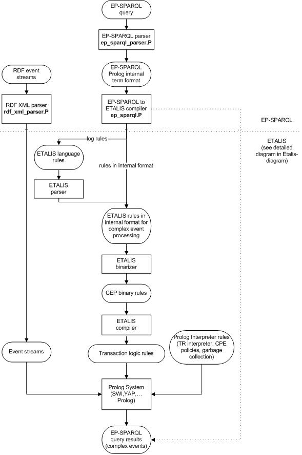
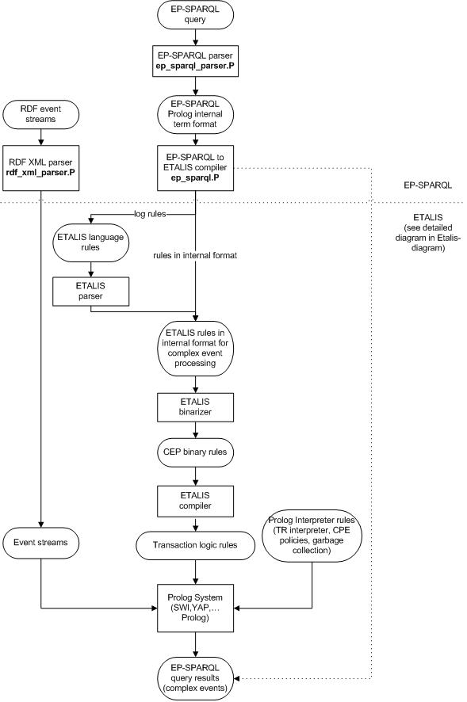
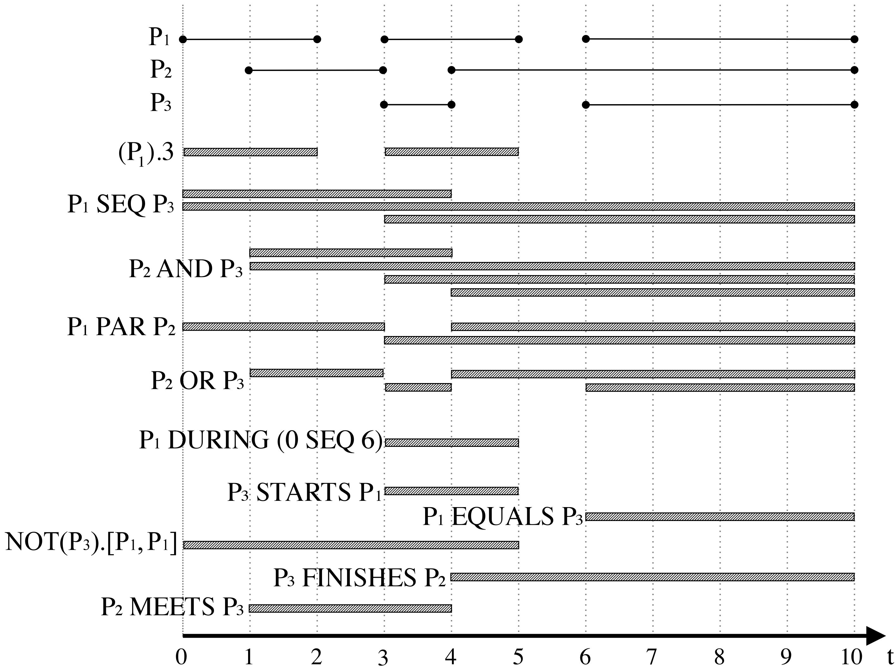

The ETALIS System Version 1.1 Manual

Draft
Paul Fodor
Darko Anicic
Sebastian Rudolph
Jia Ding
Ahmed Hafsi
Roland Stühmer
Contents
1 Introduction
1.1 Using This Manual
2 Getting Started with the ETALIS language
2.1 Installing ETALIS under UNIX and Windows
2.2 Invoking ETALIS
2.3 Compiling ETALIS programs
2.4 Sample ETALIS programs
2.5 Exiting ETALIS
3 Theoretical basis for the ETALIS language
3.1 The ETALIS language for composing events: syntax and semantics
3.2 Event processing execution in Prolog
3.3 Out-of-order event detection in ETALIS
3.4 Memory management
3.4.1 Pushed constraints
3.4.2 General and pattern-based garbage collection
3.5 Justification
4 Interacting with the ETALIS system
4.1 Entering and exiting ETALIS from the command Line
4.2 The system and its directories
4.3 The module system of ETALIS
4.4 Compiling and loading event files
4.5 ETALIS options and flags
4.6 Foreign language interface
5 The ETALIS system operands and standard predicates
5.1 ETALIS CEP operands
5.2 ETALIS standard predicates
6 Examples
6.1 flower_delivery
6.1.1 flower_delivery_01
6.1.2 flower_delivery_02
6.1.3 flower_delivery_03
6.2 Aggregates
6.2.1 aggregates_classic_01
6.2.2 aggregates_01
6.2.3 aggregates_02
6.2.4 aggregates_03
6.2.5 aggregates_04
6.3 alarm_01
6.4 and_01
6.5 channel_01
6.6 cnot_01
6.7 during_01
6.8 dynamic_updates_01
6.9 equals_01
6.10 event_multiply_01
6.11 finishes_01
6.12 fnot_01
6.13 forall_seq_01
6.14 garbage_collection_general_01
6.15 garbage_collection_pattern_01
6.16 java_interface_01
6.17 justification_01
6.18 justification_02
6.19 justification_03
6.20 justification_04
6.21 meets_01
6.22 or_01
6.23 out_of_order_01
6.24 par_01
6.25 projection_01
6.26 projection_join_02
6.27 prolog_01
6.28 revision_01
6.29 selection_01
6.30 selection_join_02
6.31 sequence_01
6.32 sequence_02
6.33 sequence_03
6.34 sequence_04
6.35 sequence_05
6.36 sharing_01
6.37 sharing_02
6.38 star_goal_01
6.39 starts_01
6.40 transitive_closure_01
6.41 transitive_closure_02
6.42 where_01
6.43 windows_01
7 Event Processing SPARQL (EP-SPARQL)
7.0.1 Examples with EP-SPARQL
7.0.2 Internals of EP-SPARQL Implementation
Index
Complex Event Processing (CEP) is concerned with timely detection of complex events within multiple streams of atomic occurrences, and has useful applications in areas including financial services, mobile and sensor devices, click stream analysis etc.
ETALIS ([8,5,2,3,4,6]) is a research-oriented, commercial-grade Complex Event Processing Logic Programming system for Unix and Windows-based platforms. In addition to providing standard complex event composition operators, ETALIS includes the following features:
- Evaluation of out-of-order events.
- Efficient aggregate functions (sum,min,max,etc.).
- Dynamic insertion and retraction of complex event rules.
- A system of modules.
- A variety of garbage collection techniques.
An event represents something that occurs, happens or changes the current state of affairs. For example, an event may signify a problem or an impending problem, a threshold, an opportunity, an information becoming available, a deviation etc. We distinguish between atomic and complex events. An atomic event is defined as an instantaneous occurrence of interest at a point in time. In order to describe more complex dynamic matters that involve several atomic events, formalisms have been created which allow for combining atomic into complex events, using different event operators and temporal relationships. The field of Complex Event Processing has the task of processing streams of atomic events with the goal of detecting complex events according to meaningful event patterns.1
We have observed that logic programming can be useful with respect to many concepts of CEP. First, a rule-based formalism (like the one we present in this paper) is expressive enough and convenient to represent diverse complex event patterns. Also declarative rules are free of side-effects (e.g. confluence problem). Second, integration of query processing, that is essential in many event-based applications, with event processing is easy and natural (e.g. recursive queries). Third, our experience with use of logic programing in implementation of the main constructs in CEP as well as in providing extensibility of a CEP system is very positive and encouraging (e.g. number of code lines in logic programming is significantly smaller than in procedural programming). Ultimately, a logic-based event model allows for reasoning over events, their relationships, entire state, and possible contextual knowledge available for a particular domain (application). This feature potentially can enable a new generation of programmers to innovate on novel event-driven applications in AI.
The general task of Complex Event Processing can be described as follows. Within some dynamic setting, events take place. Those atomic events are instantaneous, i.e., they happen at one specific point in time and have a duration of zero. Notifications about these occurred events together with their timestamps and possibly further associated data (such as involved entities, numerical parameters of the event, or provenance data) enter the CEP system in the order of their occurrence.
The CEP system further features a set of complex event descriptions, by means of which complex events can be specified as temporal constellations of atomic events. The complex events thus defined can in turn be used to compose even more complex events and so forth. As opposed to atomic events, those complex events are not considered instantaneous but are endowed with a time interval denoting when the event started and when it ended.
The purpose of the CEP system is now to detect complex events within this input stream of atomic events. That is, the system is supposed to notify that the occurrence of a certain complex event has been detected, as soon as the system is notified of an atomic event that completes a sequence which makes up the complex event due to the complex event description. This notification may be accompanied by additional information composed from the atomic events' data. As a consequence of this detection (and depending on the associated data), responding actions can be taken, yet this is outside the scope of this paper.
In summary, the problem we address in our approach is to detect complex events (specified in an appropriate formal language) within a stream of atomic events. Thereby we assume that the timeliness of this detection is crucial and algorithmically optimize our method towards a fast response behavior.
In the next two figures we have the ETALIS and EP-SPARQL diagrams.
They are self explanatory and in the Section 5 we also
describe the API to access these diferent modules.
 Figure 1.1: The ETALIS system diagram

Figure 1.2: The EP-SPARQL diagram
Figure 1.1: The ETALIS system diagram

Figure 1.2: The EP-SPARQL diagram
1.1 Using This Manual
We adopt some standard notational conventions, such as the name/arity
convention for describing events, predicates and functors, + to
denote
input arguments,
- to denote output arguments in database predicates,
? for
arguments that may be either input or output and # for
arguments that are both input and output (can be changed by the
procedure).
. Also, the manual uses the UNIX syntax for
files and directories except when it specifically addresses other
operating systems such as Windows.
Finally, we note that ETALIS is under continuous development, and this
document -intended to be the user manual- reflects the current
status (Version 1.1) of our system.
We take great efforts to
create a robust and efficient system, but
ETALIS is a research system and is to some degree experimental.
While some of Version 1.1 is subject to change in future releases, we
will try to be as upward-compatible as possible.
We would also like to
hear from experienced users of our system about features they would
like us to include. We do try to accommodate serious users of ETALIS
whenever we can.
Chapter 2
Getting Started with the ETALIS language
This section describes the steps needed to install ETALIS under UNIX and
under Windows.
2.1 Installing ETALIS under UNIX and Windows
The easiest way to install ETALIS is to use the following procedure.
- Unzip Etalis from the latest release or check out Etalis from the Google code repository:
http://code.google.com/p/etalis/source/checkout
using ßubversion".
Linux installations have subversion ßvn" programs, while for Windows,
we recommend "TortoiseSVN" from
http://tortoisesvn.tigris.org.
Etalis runs on multiple Prolog systems (we tested SWI, XSB, Yap and
Sicstus).
However, some features, like the alarm predicates, are supported only under
SWI. We will note these exceptions in this document.
SWI can be downloaded from:
http://www.swi-prolog.org/download,
while specific questions about SWI can be addressed on its mailing list:
http://www.swi-prolog.org/Mailinglist.txt
Please use other mailing lists, like the newsgroup comp.lang.prolog, for general Prolog questions.
An easy way to access this newsgroup is from the Google group
http://groups.google.com/group/comp.lang.prolog.
- Decide in which directory in your file system you want to install
ETALIS and copy or move ETALIS there.
2.2 Invoking ETALIS
Under Windows and SWI Prolog, ETALIS can be invoked by the command:
$ETALIS_DIR/etalis.bat
You will find yourself in the top level Prolog interpreter.
You can modify the script for other Prolog systems.
2.3 Compiling ETALIS programs
One way to compile a program from a file, such as myfile.event in
the current directory and load it into memory, is to type the query:
compile_event_file('my_file.event').
where my_file.event is the name of the file.
2.4 Sample ETALIS programs
There are several sample ETALIS source programs in the directory:
$ETALIS_DIR/examples illustrating a number of standard features, as
well as a number of non-standardized or ETALIS-specific features
including operands, garbage collection, windowing, etc.
Hence, a sample session might look like
(the actual times shown below may vary and some extra information is given
using comments after the % character):
my_favourite_prompt> cd $ETALIS_DIR/examples
my_favourite_prompt> test.bat
and_test_01 passed
aggregates_01 passed
alarm_01 passed
cnot_01 passed
during_01 passed
dynamic_updates_01 passed
equals_01 passed
event_multiply_01 passed
flower_delivery_01 passed
...
my_favourite_prompt>
2.5 Exiting ETALIS
If you want to exit ETALIS, issue the command halt. or
simply type CTRL-d at the ETALIS prompt. To exit ETALIS while it is
executing queries, strike CTRL-c a number of times.
Chapter 3
Theoretical basis for the ETALIS language
3.1 The ETALIS language for composing events: syntax and semantics
The syntax of the language allows for the description of time and events. We represent time instants as well as durations as nonnegative rational numbers q ∈ \mathbbQ+. Events can be atomic or complex. An atomic event refers to an instantaneous occurrence of interest. Atomic events are expressed as ground atoms (i.e. predicates followed by arguments which are terms not containing variables). Intuitively, the arguments of a ground atom describing an atomic event denote information items (i.e. event data) that provide additional information about that event.
Atomic events can be composed to form complex events via event patterns. We use event patterns to describe how events can (or have to) be temporally situated to other events or absolute time points. The language P of event patterns is formally defined by
|
|
| |
| |
| P BIN P | NOT(P,seq(P1,P2)) |
|
|
|
|
Thereby, pr is a predicate name with arity n, ti denote terms, t is a term of type boolean, q is a nonnegative rational number, and BIN is one of the binary operators SEQ, AND, PAR, OR, EQUALS, MEETS, EQUALS, STARTS, or FINISHES. As a side condition, in every expression p WHERE t, all variables occurring in t must also occur in the pattern p.
Finally, an event rule is defined as a formula of the shape
where p is an event pattern containing all variables occurring in pr(t1,…,tn).
Adhering to a stock market scenario, one instantaneous event (not requiring further specification) might be market_closes(). Other events with additional information associated via arguments would be bankrupt(lehman) or buys(citigroup,wachovia). Within patterns, variables instead of constants may occur as arguments, whence we can write bankrupt(X) as a pattern matching all bankruptcy events irrespective of the victim. "Artificial" time-point events can be defined by just providing the according timestamp.
Figure 3.1 demonstrates the various ways of constructing complex event descriptions from simpler ones in the proposed language for event processing. Moreover, the figure informally introduces the semantics of the language.

Figure 3.1: Language for Events Processing-Composition Operators
Let us assume that instances of three complex events, P1, P2, P3, are occurring in time intervals as shown in Figure 3.1. Vertical dashed lines depict different time units, while the horizontal bars represent detected complex events for the given patterns.
It is worth noting that the defined pattern language captures the set of all possible 13 relations on two temporal intervals as defined in [1]. The set can also be used for rich temporal reasoning.
In the following examples, event patterns are considered under the unrestricted policy. In event processing, consumption policies deal with an issue of selecting particular events occurrences when there are more than one event instance applicable and consuming events after they have been used in patterns.
It is worthwhile to briefly review the modeling capabilities of the presented pattern language. For example, one might be interested in defining an event matching stock market working days:
|
workingDay() ← NOT(marketCloses())[marketOpens(),marketCloses()]. |
|
Moreover, we might be interested in detecting the event of two bankruptcies happening on the same market working day:
|
|
(bankrupt(X) SEQ bankrupt(Y)) DURING workingDay(). |
|
This event rule also shows, how event information (about involved institutions, provenance, etc.) can be "passed" on to the defined complex events by using variables. Furthermore, variables may be employed to conditionally group events into complex ones if they refer to the same entity:
|
indirectlyAcquires(X,Y) ← buys(Z,Y) AND buys(X,Z) |
|
Even more elaborate constraints can be put on the applicability of a pattern by endowing it with a boolean type term as filter.2 Thereby, we can detect a stock prize increase of at least 50% in a time frame of 7 days.
|
|
(prize(X,Y1) SEQ prize(X,Y2)).7 WHERE Y2 > Y1·1.5 |
|
This small selection arguably demonstrates the expressivity and versatility of the introduced language.
We define the declarative formal semantics of the proposed language for event processing in a model-theoretic way.
Note that we assume a fixed interpretation of the occurring function symbols, i.e. for every function symbol f of arity n, we presume a predefined function f*: Conn → Con. That is, in our setting, functions are treated as built-in utilities.
As usual, a variable assignment is a mapping μ: Var → Con assigning a value to every variable. We let μ* denote the extension of μ to terms defined in the usual way:
In addition to the set of rules R, we fix an event stream. The event stream is formalized as a mapping ϵ: Ground → 2\mathbbQ+ from ground predicates into sets of nonnegative rational numbers. It thereby indicates at what time instants what elementary events occur. As a side condition, we require ϵ to be free of accumulation points, i.e. for every q ∈ \mathbbQ+, the set {q′ ∈ \mathbbQ+ | q′ < q and q′ ∈ ϵ(g) for some g ∈ Ground} is finite.
Now, we define an interpretation I: Ground → 2\mathbbQ+×\mathbbQ+ as a mapping from the ground atoms to sets of pairs of nonnegative rationals, such that q1 ≤ q2 for every 〈q1,q2〉 ∈ I(g) for all g ∈ Ground.
Given an event stream ϵ, an interpretation I is called a model for a rule set R - written as I \modelsϵ R - if the following conditions are satisfied:
C1
〈q,q 〉 ∈ I(g) for every q ∈ \mathbbQ+ and g ∈ Ground with q ∈ ϵ(g)
C2
for every rule atom ← pattern and every variable assignment μ we have Iμ(atom) ⊆ Iμ(pattern) where Iμ is inductively defined as displayed in Fig. 3.2.
|
|
| |
| |
| |
| |
| |
{ 〈q,q〉 } for all q ∈ \mathbbQ+ |
|
| |
Iμ( p ) ∩{〈q1,q2〉 | q2−q1 = q} |
|
| |
{ 〈q1,q4〉 | 〈q1,q2〉 ∈ Iμ(p1) and 〈q3,q4〉 ∈ Iμ(p2) for some q2,q3 ∈ \mathbbQ+ with q2 < q3 } |
|
| |
{ 〈 |
min
| (q1,q3), |
max
| (q2,q4)〉 | 〈q1,q2〉 ∈ Iμ(p1) and 〈q3,q4〉 ∈ Iμ(p2) for some q2,q3 ∈ \mathbbQ+} |
|
| |
{ 〈 |
min
| (q1,q3), |
max
| (q2,q4)〉 | 〈q1,q2〉 ∈ Iμ(p1) and 〈q3,q4〉 ∈ Iμ(p2) |
|
| |
for some q2,q3 ∈ \mathbbQ+ with |
max
| (q1,q3) < |
min
| (q2,q4) } |
|
| |
| |
| |
{ 〈q1,q3〉 | 〈q1,q2〉 ∈ Iμ(p1) and 〈q2,q3〉 ∈ Iμ(p2) for some q2 ∈ \mathbbQ+} |
|
| |
{ 〈q3,q4〉 | 〈q1,q2〉 ∈ Iμ(p1) and 〈q3,q4〉 ∈ Iμ(p2) for some q2,q3 ∈ \mathbbQ+ with q3 < q1 < q2 < q4 } |
|
| |
{ 〈q1,q3〉 | 〈q1,q2〉 ∈ Iμ(p1) and 〈q1,q3〉 ∈ Iμ(p2) for some q2 ∈ \mathbbQ+ with q2 < q3} |
|
| |
{ 〈q1,q3〉 | 〈q2,q3〉 ∈ Iμ(p1) and 〈q1,q3〉 ∈ Iμ(p2) for some q2 ∈ \mathbbQ+ with q1 < q2} |
|
| |
Iμ(p2 SEQ p3) \Iμ(p2 SEQ p1 SEQ p3) |
|
|
|
|
#1Definition of extensional interpretation of event patterns. We use p(x) for patterns, q(x) for rational numbers, t(x) for terms and pr for predicates.
Given an interpretation I and some q ∈ \mathbbQ+, we let I|q denote the interpretation defined via I|q(g)=I(g) ∩{〈q1,q2〉 | q2−q1 ≤ q}.
Given two interpretations I and J, we say that I is preferred to J if there exists a q ∈ \mathbbQ+ with I|q ⊂ J|q.
A model I is called minimal if there is no other model preferred to I. It is easy to show that for every event stream ϵ and rule base R there is a unique minimal model Iϵ,R.
Finally, given an atom a and two rational numbers q1, q2, we say that the event a[q1,q2] is a consequence of the event stream ϵ and the rule base R (written ϵ,R\models a[q1,q2]), if 〈q1,q2〉 ∈ Iϵ,Rμ(a) for some variable assignment μ.
It can be easily verified that the behavior of the event stream ϵ beyond the time point q2 is irrelevant for determining whether ϵ,R\models a[q1,q2] is the case.3 This justifies to take the perspective of ϵ being only partially known (and continuously unveiled along a time line) while the task is to detect event-consequences as soon as possible.
3.2 Event processing execution in Prolog
The syntax of ETALIS Language for Events allows for the description of event patterns as event rules of the form: complexEvent← EventPattern. Events occur over time intervals. Time instants as well as durations are modeled as nonnegative rational numbers q ∈ \mathbbQ+. Events can be atomic or complex, while no distinction is made in their applicability to rules. An atomic event refers to an instantaneous occurrence, i.e., the time interval length is zero. Althought not a requirement, atomic events are ground (i.e. predicates followed by arguments which are terms not containing variables). Intuitively, the arguments of a ground atom describing an atomic event denote information items (i.e. event data) that provide additional information about the event.
Events participate in composition rules to trigger complex events. When an event stream of atomic events is fed into the system, all patterns are considered and complex events are triggered. The event stream is formalized as a mapping ϵ: Ground → 2\mathbbQ+ from ground predicates into sets of nonnegative rational numbers. It thereby indicates at what time instants what simple events occur. As a side condition, it is required that ϵ is free of accumulation points, i.e. for every q ∈ \mathbbQ+, the set {q′ ∈ \mathbbQ+ | q′ < q and q′ ∈ ϵ(g) for some g ∈ Ground} is finite.
Given an event stream ϵ, an interpretation I is called a model for a rule set R - written as I \modelsϵ R - if the following conditions are satisfied:
Given a set of event patterns and a stream of input events, the ETALIS system can compute the final model of all events. To achieve this, ETALIS implements event-driven backward chaining rules. These rules are executed in a data-driven fashion. That is the inference system incrementally furthers the pattern completion as relevant events occur. As soon as the last event required for a pattern fulfillment is observed, the inference system triggers the complex event.
A user defines event patterns of the form given in the left column of Figure 3.2. When submitted, ETALIS automatically transforms these patterns into event-driven backward chaining rules. These are executable rules that enable detection of complex events at run time. The transformation is sketched as follows.
First, an event pattern is binarized left associatively, i.e., operations are coupled to generate only binary formulas, introduce intermediate events for every binary formula and replace these formulas in the original program. This eases the process of automatic construction of event-driven rules and helps in implementation of various event operators defined by the language semantics (Figure 3.2). Apart from this, the consideration of events on "two by two" basis enhances the computation sharing in the pattern detection, and hence helps in achieving better run-time performance.
For instance, a formula: e ← p1 SEQ p2 SEQ p3... SEQ pn (e is detected when an event p1 is followed by p2,.., followed by pn) is binarized by introducing intermediate events (goals) as:
|
|
|
|
tempn−1 ← tempn−2 SEQ pn−1 |
|
|
|
|
|
| (3.1) |
Second, each binary formula is then compiled into a set of event-driven backward chaining rules (i.e., executable rules). Each operator, defined by the language semantics, has a specific transformation which is provided by ETALIS system. Due to the space restriction, only the transformation for the sequential conjunction is sketched below. Implementation of other operators follow similar design patterns.
Sequential conjunction.
Input: event binary goal ei← a SEQ b.
Output: event-driven backward chaining rules for SEQ operator.
For each event binary goal ei ← a SEQ b {
whenever a occurs at some [T1,T2], apply all rules r(a)i:
r(a)1:- insert goal(b[_,_],a[T1,T2],ei[_,_]);
whenever b occurs at some [T3,T4], apply all rules r(b)j:
r(b)1:- if goal(b[_,_],a[T1,T2],ei[_,_]) exist and T2 < T3 then
delete that goal, and trigger event ei[T1,T4];
end if
}
The transformation accepts as input a binary sequence ei← a SEQ b, and produces event-driven backward chaining rules4. These rules are represented by r(a)1 and r(b)1 in Transformation 2.1. They belong to two different classes of rules. We refer to the first class as to rules used to generate goals. The second class correspond to checking rules. r(a)1 is a rule that generates goals of type goal(b[_,_],a[T1,T2],ei[_,_]) when an event a occurs (i.e., when the rule head r(a)1 is satisfied) at some [T1,T2]. Its interpretation is that "an event a has occurred at [T1,T2]5, and we are waiting for b to happen, in order to detect ei". Obviously the goal does not carry information about times for b and ei, as we don't know when they will occur. In general, the second event in a goal always denotes an event that has just occurred, whereas the role of the first event is to specify what we are waiting for, to detect an event that is on the third position. Now when an event b happens at some [T3,T4], the rule r(b)1 will execute. The rule checks whether goal(b[_,_],a[T1,T2],ei[_,_]) is true (meaning that an a occurred prior to the occurrence of b, if T2 < T3) in which case it triggers a (more) complex event ei[T1,T4]. Additionally the rule deletes goal(b[_,_],a[T1,T2],ei[_,_]) to free up the memory (this is an optional operation, and in certain applications it may be omitted).
Another important issue in event processing is to consider different consumption policies when detecting complex events. Let us assume that we want to detect event a followed by event b, and the stream produces events: a,a,b. It is a question which event a will be taken for the pattern detection, the first or the second instance. In event processing, consumption policies (or event contexts) deal with an issue of selecting particular events occurrences when there are more than one event instance applicable and consuming events after they have been used in patterns. In ETALIS we have implemented recent, chronological, and unrestricted policy; and for practical use with out-of-order events, recent and
chronological policies are used.
3.3 Out-of-order event detection in ETALIS
To explain our approach which deals with late events let us consider a simple event binary goal:
ei ← a SEQ b (using the binarization, other more complicated examples can also be reduced to this case). The solution slightly modifies the initial Transformation 2.1. by adding additional rules. A rule that generates a goal (i.e., r(a)1) is accompanied by a checking rule (i.e., r(a)2) and vise versa (the checking rule, r(b)1, is now added a rule that generates a goal, r(b)2, see also Section ). Therefore we process the sequence in both directions: an in-order direction (as in Transformation 3.2); and an out-of-order direction (with newly added rules in Transformation 3.1.). Although, we show here just the transformation for the sequence operator, we have implemented transformations for all thirteen operators inspired from Allen's Interval Algebra and also our additional various operators dealing with negation, constraints on event rules and aggregates.
Rules r(a)1 and r(a)2 will be evaluated when an event a[T1,T2] occurs (i.e., at [T1,T2]). Rule r(a)1 will insert a goal goal(b[_,_],a[T1,T2],ei[_,_]) into the database. Additionally rule r(a)2 will check whether the event a is an out-of-order event, in which case the system will also trigger an event ei. The event a is an out-of-order event if a goal goal_out(a[_,_],b[T3,T4],ei[_,_]) exists in the database, and T2 < T3. The latter condition says that although event a[T1,T2] just happened (at some [T1,T2]), there is an event b[T3,T4] that has already happened such that its timestamp is bigger that the a's timestamp. This suggests that event a is an out-of-order event, and an event ei[T1,T4] should be indeed triggered.
Rules, that will fire when an event b[T3,T4] occurs (at some [T3,T4]), work similarly as those for a[T1,T2]. Rule r(b)1 will check whether an event a[T1,T2] has already happened (i.e., goal(b[_,_],a[T1,T2],ei[_,_]) exists in the database); and if yes, it will trigger an event ei[T1,T4]. That is an in-order case of processing events a and b. Additionally rule r(b)2 will insert a goal goal_out(a[_,_],b[T3,T4],ei[_,_]), which will be used by r(a)2 if an out-of-order event a occurs.
Sequence with Out-of-Order Events.
Input: event binary goal ei ← a SEQ b.
Output: event-driven backward chaining rules for SEQ operator.
For each event binary goal ei ← a SEQ b {
whenever a[T1,T2] occurs apply all rules r(a)_i:
r(a)1:- insert goal(b[_,_],a[T1,T2],ei[_,_]);
r(a)2:- if goal_out(a[_,_],b[T3,T4],ei[_,_]) exist and T2 < T3 then
delete that goal and trigger event ei[T1,T4];
end if
whenever b[T3,T4] occurs apply all rules r(b)_j:
r(b)1:- if goal(b[_,_],a[T1,T2],ei[_,_]) exist and T2 < T3 then
delete that goal and trigger event ei[T1,T4];
end if
r(b)2:- insert goal_out(a[_,_],b[T3,T4],ei[_,_]);
}
Effectively, the price paid for handling out-of-order events is mainly reflected throughout insertion of out-of-order goals (e.g., goal_out(a[_,_],b[T3,T4],ei[_,_])) and the fact that they need to be cleared up after certain time (to free up the memory). Therefore, in the next section we discuss a solution for the effective garbage collection of outdated out-of-order goals.
3.4 Memory management
To deal with out-of-order events safely, no data can ever be purged from memory since event processing assumes processing of infinite streams of data.
However, this requirement is an exaggeration in reality and is impracticable due to overuse of memory.
Network latencies can be approximated, so it is clear that, at some point, data must be deleted from memory.
In the transformation above, occurrences of each event are recorded by inserting a goal in memory.
Some of these goals are removed at the time they are "consumed" to build more complex events, while the others can be pruned using a time window6.
Due to the requirement in CEP that patterns are defined on time windows, we have developed time-based garbage collection strategies and not
triggered by the memory consumption ones like in many other fields.
The time-based garbage collection is the natural approach for CEP
to release the memory necessary for the execution of events.
We have implemented the time guarantees for out-of-order event detection in different ways: pushed constraints; general garbage collection; and event-pattern garbage collection.
The common way to deal with garbage collection of overdue events is to define a time window for the event pattern and check this constraint during the composition of the complex event.
For instance, an event binary goal:
ruleId([ooo_window(10)]) rule: ei ← a SEQ b SEQ c.
specifies that the length of a time window for out-of-order events is 10 seconds (i.e., ooo_window(10)). This means the system guarantees that out-of-order events will be processed correctly if their delay is shorter that the specified window.
3.4.1 Pushed constraints
Our first implementation for out-of-order complex event detection in ETALIS modifies the binarization by pushing the constraints for time guarantees into binary events during binarization, and Transformation 3.1 with checking the constraints before triggering composed events. Pushing the constraints during binarization ensures that time guarantees are checked at each step, so unnecessary intermediary sub-complex events are not generated if the time guarantees are not satisfied. For predicative rules, we push variants for all the terms and variables used in the rule to ensure that all bindings are satisfied during execution (equivalent to a lifting from propositional to predicative logic).
Sequence with constraint checks.
Input: event binary goal RuleLabelConditions ei ← a SEQ b.
Output: event-driven backward chaining rules for SEQ operator.
For each event binary goal RuleLabelConditions ei ← a SEQ b {
whenever a[T1,T2] occurs apply all rules r(a)i:
r(a)1:- insert goal(b[_,_],a[T1,T2],ei[_,_]);
r(a)2:- if goal_out(a[_,_],b[T3,T4],ei[_,_]) exist and T2 < T3
and check_constraints(RuleLabelConditions) then
delete that goal and trigger event ei[T1,T4];
end if
whenever b[T3,T4] occurs apply all rules r(b)j:
r(b)1:- if goal(b[_,_],a[T1,T2],ei[_,_]) exist and T2 < T3
and check_constraints(RuleLabelConditions) then
delete that goal and trigger event ei[T1,T4];
end if
r(b)2:- insert goal_out(a[_,_],b[T3,T4],ei[_,_]);
}
One advantage of this approach is that any constraints can be verified, not only for out-of-order event detection. Such constraints are common in event processing, e.g., the event detection started after or before a certain time. Moreover, this approach is declarative, i.e., new constraints can be defined for any rule and the handling of the constraints is defined by writing a user defined check_constraint rule for that constraint type.
However, the approach also has important disadvantages. First, ETALIS enables sharing of common formulas during binarization (i.e., shared intermediate complex events are computed only once and shared in multiple event formulas). Pushing the constraints and labels for each rule makes sharing not possible anymore. However, a bigger disadvantage is the fact that the time guarantee is checked for each detected event. An efficient solution would clear events when they are overdue, i.e., not every time an event is detected. For instance, if the system detects 100,000 events in two seconds and the time window is set to 2 seconds, then the system is expected to clean the overdue events only once (after two seconds), i.e., without performing 100,000 checks.
3.4.2 General and pattern-based garbage collection
We prune expired goals periodically using alarm predicates. The general approach for garbage collection (GC) is utilized to reduce an event path on which out-of-order events are processed (similarly as in [7]). Essentially it enables an out-of-order event to be late for a fixed window of time with respect to system clock, denoted by SystemClock. The GC window W specifies the maximum time range between the first and last event for any pattern detection (i.e., infinitely long complex patterns are of no interest). Every event ei[T1,T2] should be kept in memory at least the time defined by W, and all events are allowed to be purged if SystemClock > [T1 + W]. GC is applied for all intermediate goals, not only for out-of-order event processing.
We use an alarm rule (3.2) to prune unnecessary goals. This, sort of, garbage collector is triggered by the system generated events (defined by the system time SystemClock and the GC window W).
|
|
|
garbageCollector(SystemClock) ← |
|
|
findAll(goal(_,X([T1,T2],W),_) SEQ SystemClock > [T1+W], |
|
|
|
while_do(member(goal(_,X([T1,T2]),_,L))) ( |
|
|
del(goal(_,X([T1,T2]),_))) |
|
|
and alarm(garbageCollector(SystemClock+W),W). |
|
|
|
| (3.2) |
This means that for a time window of 10 seconds, the following sequence of events will not be detected by the rule (): stock(agent1,"G",110,10), that is triggered and received at time 2; and stock(agent1,"G",100,10), that is triggered at time 1 and received at time 21. The general garbage collection works well when there is a single garbage collection window W for the whole system (e.g., the network delay is the same for all sources).
The window essentially specifies what is a guaranteed "minimum" time, ensured by the system, that out-of-order events will be processed correctly: if the GC via alarms is set to W time window, the presented procedure correctly handles out-of-order events within the window.
Let us consider now a case when different elements in the system have different delays and time guarantees, i.e., there exist different garbage collection times for different patterns. In this case, the garbage collection alarms are defined at the level of each rule. The procedure starts GC alarms for each rule separately, looking for intermediate goals for those rules checking the condition SystemClock > [T1 + Window(ei)].
Similarly to the pushed constraints case, rules are defined with properties, and the binarization pushes the rule properties to sub-components. However, alarm events for garbage collection are scheduled to happen in Window(ei) time. The scheduling of alarms is done right after the compilation of pattern rules in an event program. The approach is conservative: if one writes patterns without garbage collection window, no alarm is generated. However, we also permit dynamic properties by inserting/deleting properties on-the-fly
ins/del(property(RuleId,PropertyName,PropertyValue)).
In this case, the GC is started automatically during the execution (depending on the situation). The model theory is also extended with a augmentation theory for handling rule properties, i.e., we have normal labeled CEP rules and and special predicates defining features of rules can be considered as the the meta-theory over the event logic
property(RuleId,PropertyName,PropertyValue). This makes the system more extensible: by adding new properties or meta-theories, we do not modify the previous semantic framework.
3.5 Justification
Debugging is one of the determining issues in the longevity of using any programming language. Efficient debugging tools are needed by every programmer; and event-oriented programming is not an exception.
Justification is done by adding justification edges in a justification-deduction graph. When event b occurs at some [T3,T4], the third rule will insert jstf_edge. The edge establishes a causal relationship saying that c happened as a consequence of a sequence "a folloed by b". The edge will be inserted only if event a indeed happened prior to event b. This condition is ensured by checking whether the goal goal(b,a,c) and the condition, T2 < T3, are both true (see the third rule); and these will be true if event a happened prior to an occurrence of event b (i.e., the second rule inserts goal goal(b,a,c) when event a happens).
|
|
| |
| |
insert(goal(b[_,_],a[T1,T2],c[_,_])). |
|
| |
goal(b[T3,T4],a[T1,T2],c[_,_]), T2 < T3, |
|
| |
| |
| |
| |
| |
Lbl,seq(event(a,[T1,T2]),event(b,[T3,T4])) |
|
| |
|
|
|
Figure
Figure 3.2: Justification of a successful occurrence of event assignmentCounter
When a user wants to get a justification for a certain event, the following rule will be evaluated.
|
|
| |
| |
| |
| |
| |
Lbl,seq(event(I1,[T′1,T′2]),event(I2,[T′3,T′4])) |
|
| |
| |
jstf_ev (I1,[T′1,T′2],J2), |
|
| |
jstf_ev (I2,[T′3,T′4],J3), |
|
| |
J = jstf(Lbl,head(Ev,[T1,T2]),seq(J2,J3)). |
|
|
|
|
The rule effectively traverses the justification-deduction graph (that consists of complex events split up into binary events). The graph is traversed top-down starting from the complex event (that needs to be justified). The rule is recursive; it calls itself until all pairs of events that build the complex event are found. Due to space restriction we have shown only the justification rule for the sequence operator.
Chapter 4
Interacting with the ETALIS system
Throughout this chapter, we use $ETALIS\_DIR to refer to the
directory in which ETALIS was installed.
4.1 Entering and exiting ETALIS from the command Line
After the system has been installed, the emulator's executable code appears
in the file:
$ETALIS\_DIR/etalis.bat
or it can be loaded in the Prolog system with:
['$ETALIS\_DIR/src/etalis.P']
Using the
-g command-line option in Yap or SWI Prolog
any goal can be can be executed, up to
1024 characters. For instance,
$ETALIS\_DIR/bin/ETALIS -g ``compile_event_file('hello-world.event'),
execute\_event\_stream\_file('-stream.P'),halt.''
loads and event file "hello-world.event",
executes all the events from a file
"stream.P"
and exits ETALIS. Within the 1024 character
limit, any query or command can be executed.
There are several ways to exit ETALIS. A user may issue the
command halt. or end\_of\_file., or simply type
CTRL-d at the ETALIS prompt. To interrupt ETALIS
while it is executing a query, strike CTRL-c.
4.2 The system and its directories
When installed, the ETALIS system resides in a single directory that
contains several subdirectories.
- docs contains the user manuals and other documentation,
including the technical documentation manual for developers.
- examples contains some examples for all features of ETALIS.
- lib contains links to external libraries used in ETALIS.
- src The directory src contains the sources of ETALIS.
These files are written in Prolog and are loaded in the main file
"etalis.P".
- www contains the WWW interface to ETALIS, which is
written in Java Server Pages (JSP).
4.3 The module system of ETALIS
ETALIS has been designed with a basic module system in mind. Modules
provide a small step towards logic programming "in the large"
that facilitates the construction of large programs or projects from
components that are developed separately and support the principle of
information hiding.
Altough, only partially implemented, the Etalis module is similar to that of Prolog systems and is flat, that is modules
cannot be nested.
We also allow creation of modules dynamically and updates of data in all modules, including deletion of modules.
Files are not treated as modules, but are loaded in modules.
:- export sym1, ..., syml.
:- import sym1, ..., symn from file.
where symi has the form functor/arity, and module is a Prolog
atom representing a module name.
In ETALIS, the declaration
:- export sym1, ..., syml.
specifies that the current file exports only a certain set of
event definitions.
The declaration
:- import sym1, ..., symn from file.
allows events to be imported from a file.
These predicates can be used in the main user space without any prefix.
All the other event and e/n
predicate symbols p/n are identified as if they were prefixed with
their module name (i.e. base file name). Hence the occurrence of
e/n in two different modules, m1 and m2 are distinct
symbols that can be denoted as m1:e/n and m2:e/n.
4.4 Compiling and loading event files
ETALIS provides for both statically compiled code and
dynamically asserted code.
The standard predicate compile_even_file/1
is the most convenient
method for entering static source code rules into ETALIS's
database.
Compiling a file File consists of the following steps.
- Name Resolution:
- determine the file that File designates.
- Parsing:
-
parsing the event file into internal rule representation.
- Binarization:
-
binarize the event rules. The result of this step is a set of binary rules where the bodies consist of at most 2 events and one ETALIS operator.
- Compilation of event rules:
-
compile the file into a format close to Prolog and Transaction Logic.
- Loading:
-
load the resulting program into memory.
- Event Stream Execution:
-
execute an event stream detecting the complex events. The events are considered in the order in which they are provided by the consumption policy module.
| ?- compile_event_file(Files).
For a given, File to be compiled, the source file name
corresponding to File is obtained by concatenating a directory
prefix and the extension .event.
The directory prefix must be in the dynamic loader path.
4.5 ETALIS options and flags
The ETALIS system has several execution options.
-
etalis_justification/1: enables the justification. Can take the values "on" and "off".
It is defined in the file "compiler.P".
-
event_consumption_policy/1: sets the event consumtpion policy. Can be: "recent", "chronological" and "unrestricted" (defined in "event_utils.P").
The default setting is "event_consumption_policy(recent)".
-
garbage_control/1: enables various types of garbage collection, that is goals older than a certain period of time are cleaned.
Can have the the values defined in "garbage_collection.P". The default setting is "garbage_control(off)".
-
garbage_window/1:
sets the period of time the general garbage collection looks back.
The default setting is "garbage_window(-1)".
-
garbage_window_step/1:
sets the period of time when general garbage
collection is activated.
The default setting is "garbage_window_step(-1)".
-
logging/1:
enables logging all the events to output.
Can take the values: "on" or "off" (defined in "utils.P").
The default setting is "logging(off)".
-
logging_to_file/1:
enables logging to an external file.
Can take values: "on" or "off" (defined in "utils.P").
Use "write_log/2" to log an event to a file
The default setting is "logging_to_file(off)).
-
output_temporary_files/1:
enables logging compiled event files (after
binarization and compilation). Can have the values: "on" or "off"
(defined in "event_utils.P").
The default setting is "output_temporary_files(off)).
-
out_of_order/1:
enables detection of events out out of order. Can have
the values: "on" or "off" (defined in "compiler.P").
The default setting is "out_of_order(off)".
-
prolog_backend/1:
sets the prolog backend. Can be: "swi", "xsb", "yap"
and "sicstus" (defined in "event_utils.P").
The default setting is "prolog_backend(swi)".
-
revision_flag/1:
enables revision in detection of events. Can have the
values: "on" or "off" (defined in "compiler.P").
The default setting is "revision_flag(off)".
-
rule_sharing/1:
sets the sharing in execution between rule bodies.
Can be: "on" and "off" (defined in "binrizer.P").
The default setting is "rule_sharing(off)".
-
rule_sharing_debuging/1:
sets the sharing debuging.
Can be: "on" and "off" (defined in "binrizer.P").
The default setting is "rule_sharing_debuging(off)".
-
store_fired_events/1:
enables storing all the events fired. Can have the
values: "on" or "off" (defined in "utils.P").
The default setting is "store_fired_events(off)".
-
store_fired_events_java/1:
enables storing fired events for the Java
interface
Can have the values: "on" or "off" (defined in "java_interface.P").
The default setting is "store_fired_events_java(off)".
4.6 Foreign language interface
When ETALIS is used to build real-world systems, a foreign-language
interface may be necessary to:
- combine ETALIS with existing programs and libraries, thereby
forming composite systems;
- interface ETALIS with the widely used languages, like Java and C#.
ETALIS works with different Prolog systems: SWI, Yap,
XSB and Sicstus Prolog.
The user should contact these systems mailing lists for how to connect
from external languages, such as, Java, C, C#.
For instance, the mailing list SWI Prolog is here:
https://mailbox.iai.uni-bonn.de/mailman/listinfo.cgi/swi-prolog.
Please also use news:comp.lang.prolog
(google group: http://groups.google.com/group/comp.lang.prolog/topics)
for general Prolog questions.
General instructions on how to connect to ETALIS from an external language:
- In the external language (Java), start a SWI Prolog engine and
keep it into a list/pool of running engines (sessionID,enginePointer).
- this engine should load ETALIS in Prolog: [′src/etalis.P′].
and set to store fired events:
set_etalis_flag(store_fired_events_java,on)
to see what events were triggered in ETALIS.
Although this flag has "java" in the name, it applies to all external
languages.
- To load an event program from the external language into ETALIS, there are two options:
- save the event program into a file and call compile_event_file(File), or
- send the rules to ETALIS using
compile_event_rules( [ RawEventRules ] ).
- To ensure that the current program is the only one that the current ETALIS engine uses, first, you should call:
reset_ETALIS.
in the Prolog system, which resets ETALIS completely by deleting all event rules and all partial goals from memory.
- To fire a stream of events from the external language into ETALIS, the user should call
reset_db
in ETALIS to delete all the partial goals from memory.
The stream of events should be put in a Prolog list, call:
fire_event_list_return_external_events([EventList], OutputList)
and collect the results from OutputList.
Repeat this operation for all your events and event streams.
- Finish ETALIS with "halt" in Prolog.
Specific instructions for connecting to ETALIS from Java.
Each one of the Prolog systems that we used
has different interfaces from Java:
- SWI has two: JPL and InterProlog
- Yap has one: InterProlog
- XSB has one: InterProlog
- Sicstus has one: PrologBeans
Notes for Java interfaces for SWI Prolog:
The simplest way to connect to SWI from Java with Interprolog is to install SWI and add the path to the SWI executable (e.g., in Windows,
"c:/Program Files/pl/bin/plcon.exe") in the environment varible PATH.
In Linux, you can do this by adding the following to your .bashrc file
export PATH=/path_to_SWIBIN:$PATH
and
export SWI_BIN_DIRECTORY=/path_to_SWIBIN
For the Eclipse framework, add the path to the directory containing the
executable SWI in the current classpath by using the Window
menu -> Preferences -> Java -> BuildPath -> ClasspathVariables -> New (give it
any name and the directories you want to add to classpath).
Please also put interprolog.jar in the CLASSPATH variable.
Chapter 5
The ETALIS system operands and standard predicates
5.1 ETALIS CEP operands
The syntax of ETALIS is taken from Prolog.
The arguments of the ETALIS language are called terms.
A ETALIS term can be constructed from any logical symbol or a term
followed by any finite number of arguments. A term
is either a constant, a variable, or a compound term.
A constant is either a number (integer or floating-point) or an
atom.
The printed form of an integer in ETALIS consists of a sequence of digits
optionally preceded by a minus sign ('-') interpreted as base 10 integers.
A floating-point number consists of a sequence of digits with an
embedded decimal point, optionally preceded by a minus sign ('-').
A atom is identified by its name, which is a sequence of up to 1000
characters (other than the null character).
Variables may be written as any sequence of alphanumeric characters
(including '_') beginning with either a capital letter or '_'.
Like in Prolog, the structured data objects of are compound terms
(or structures). The external representation of a compound term
comprises a functor (called the principal functor or the
name of the compound term) and a sequence of one or more terms called
arguments.
The operators in ETALIS are simply a notational convenience.
However, from a practical or a programmer's point of view, the existence of
operators is highly desirable.
Keeping in mind that, in Prolog,
the operators of type 'xfy' are right-associative, that is only the
first (left-hand) subexpression must be of lower precedence; the right-hand
subexpression can be of the same precedence as the main operator, and the
left-associative operators (type 'yfx') are the other way around,
the operators in ETALIS are:
op(1200,xfy, 'rule:'), % rule tags
op(1200,xfy, '<-'), % event rules
op(1025,yfx, 'seq'), % sequential conjunction
op(1025,yfx, 'forall_seq'), % forall sequential conjunction
% (unrestricted consumption seq - can be combined with any
% other comsumption policy)
op(1040,yfx, 'and'), % classical conjunction
op(1045,yfx, 'par'), % parallel conjunction
op(1045,yfx, '#'),
op(1053,yfx, 'or'), % disjunction
op(1025,yfx, 'do'), % plugin for actions triggered by events
op(1025,yfx, 'equals'), % Alan's interval operators
op(1025,yfx, 'meets'),
op(1025,yfx, 'during'),
op(1025,yfx, 'starts'),
op(1025,yfx, 'finishes'),
op(1050,yfx, 'where'), % database conditional triggers
op(1050,yfx, 'check'), % database conditional triggers with times: t1(StartTime) and t2(EndTime)
op(1050,yfx, 'event_multiply'), % CEP event multiplication
op(200,xf, 'star_times'), % implementation of *times
op(1025,yfx, 'ntimes'), % implementation of N times
op(1031,yfx, 'cnot'), % negation - interval absence
op(1031,yfx, 'fnot'), % total negation - ``never happened''
... (other operators can be found in the ETALIS source file ``parser.P'')
5.2 ETALIS standard predicates
Whenever ETALIS is invoked, a large set of standard predicates are
defined and can be called from the interpreter or other
interfaces.
Standard predicates are listed in this manual
under the index heading Standard predicates
and at an
implementation level are declared in the directory
$ETALIS_DIR/src/.
The ETALIS system has several source files in the src directory.
- binarizer.P
contains the predicates to binarize the rules in the event programs.
The binarization(+EventRules,−BinaryEventRules)
predicate takes a set of event rules and returns a set of binary rules, that is rules with at most two events and one operation in its body.
Temporary events are created to generate the binary rules and the binarizer also enables sharing between rule bodies.
Certain operands, like the negation or star_times, are binarized with specialized formulas.
This file also contains predicates to log the binarized rules into temporary files: logging_binary_file(+InputFile,+BinaryEventRules).
- compiler.P
contains the predicate event2tr_transformation(+BinaryEventRules,−TRRules)
to transform event rules into transaction logic code.
It also contains a set of special flags forspecifying the execution of event files:
- dynamic(out_of_order/1)
enables or disables out-of-order complex event detection;
-
dynamic(revision_flag/1): enables or disables revision in complex event detection;
-
dynamic(etalis_justification/1): enables or disables justification.
- date_time.P contains the predicates for date ad time manipulation.
The current_datime(−D) returns the current date and time.
The is_datime(+T) predicate returns true if T is a datime datime(Year,Month,Day,Hour,Min,Sec,?Counter) with or without conter in date.
The less_datime(T1,T2) predicate compares datimes.
The datime_plus_sec(+Datime1,+Seconds,−Datime2) adds a number of seconds to the Datime1.
The datime_minus_sec(+Datime1,+Seconds,−Datime2) subtracts a number of seconds to the Datime1.
The datime_minus_datime(+Datime,+Datime1,−Seconds)
predicate
computes the number of seconds between two datimes.
- etalis.P contains the main predicates for event processing.
The compile_event_file(+File)
predicate
compiles an event file, parsing, binarization, transformation to
transaction logic
.
The event(+E)
predicate
executes one event triggering complex events where this event contributes
.
The fire_event_list_return_external_events(+EventList,−OutputList)
predicate
fires a list of events returning the flagged composed events
.
The execute_event_stream_file(+EventFile)
predicate
executes a stream of events from a file
.
The ins_event_rule/1
predicate
inserts a new event rule
.
The del_event_rule/1
predicate
deletes event rules where the attribute can be a rule reference or a rule.
The reasons for using only the id in delete are the following:
- event rules are compiled in multiple internal rules, so deleting all
rules that resulted from one event rule is quite complicated: we have to
compile the rule and extract all rules resulted from this one rule;
- temporary events are re-named (and also new variables are generated) and
these temporary have to be checked at deletion. Simple unification of even
variant won't do it because right bindings have to be checked.
- sharing is enabled and we don't want to delete common bodies that take
part in other rules as well as the current one that we delete.
- when we have rule ids (and properties associated to these ids) these are
pushed into all compiled rules. We know exactly what to delete.
- we can also do bulk deletes with ids: multiple rules can share the same
ID (the id doesn't have to be unique), so deleting one ID deletes all rules
that share that ID.
- event_utils.P contains the predicates for logging, event consumption policy and spying events for debugging.
The logging_TR_file(+File,+TRRules)
predicate
writes the compiled event file to a file.
The spy_event(EventFunctor/Arity)
predicate
marks EventFunctor/Arity for debuging.
The print_trigger(+EventSymbol/+Arity)
predicate
is a special predicate that the user can put in any event file.
This predicate will mark the event for logging to the
console everytime it is detected.
This predicate can be used with uninstantiated Event, when it will print all the instances of any event symbol with the same number of arguments as
stated in print_trigger/1.
Another special use of this predicate is
print_trigger(all_defined_events)
which prints all events that are not temporary
(that is, created by the binarization step).
- executor.P contains the predicates for executing events.
The event_trigger(+Event)
predicate
executes all the rules for a given event
.
- flags.P contains the predicates for chainging the ETALIS flags.
The set_etalis_flag(+Flag,+Value)
predicate
sets one of the etalis flags
. See the Section 4.5 for more details.
The get_etalis_flag(+Flag,+Value)
predicate
gets one of the etalis flags
.
- garbage_collection.P contains the predicates for goal management.
The start_garbage_collection
predicate
starts the garbage collection
.
The general_garbage_collection
predicate
starts the general garbage collection
.
The pattern_garbage_collection
predicate
starts the pattern based garbage collection for garbage_control(pattern)
where
individual rules have GC time windows.
- java_interface.P contains the predicates for interfacing with foreign languages.
The
set_etalis_flag(store_fired_eventsjava,on)
sets storing the return flagged composed events.
- justify_etalis.P contains the predicates for justification and writing justification trees on the desktop and udraw.
The justify_event(+Event,[T1,T2],−Justification),
justify_event_positive and justify_event_negative
predicates
compute the justification for events.
The write_justification(+J)
predicate
writes justification keeping some meaningful indentation.
The write_justification_udraw(File,J)
predicate
writes justification keeping some meaningful indentation
- labeled_event_rules.P contains the predicates for checking conditions for labeled rules.
The check_event_rule_conditions_internal(+Label,+Head,[+T1,+T2],+ListERProperties)
predicate
checks all properties for the event rule with the given label and Head.
- logging.P contains the predicates for logging.
The log(L)
predicate
logs an event.
- network_tcp_interface.P contains the predicates for interfacing with the network
The create_server(Port)
predicate
creates a TCP port.
The dispatch(AcceptFd)
predicate
dispatches a message.
The create_client(Host,Port)
predicate
creates a TCP client on a port of a host server.
- parser.P contains the predicates for parsing event rules.
The repeat_read(+InputHandle,−RawEventRules)
predicate
reads from a file all the event rules.
The parse_event_rules/2
predicate
parses event rules into internal format.
- storage.P contains the predicates for storing partial goals into memory.
The seeDB
predicate
prints the internal state of the database.
The reset_db
predicate
deletes all the partial goals in the current state.
The etr_dbf(+Label,+Data), etr_insf(+Label,+Data)
and etr_delf(+Label,+Data)
query, insert and delete goals into the database.
- utils.P contains the predicates for manipulation of sets, lists and other data structures usedin ETALIS.
The
counter(+CounterName,+Value),
incCounter(+CounterName) and
resetCounter(+CounterName)
predicates
handle counters implemented in Prolog.
The set_intersection/3 and set_difference/3
predicates
handle sets implemented in Prolog.
We assume that the elements are not duplicated inside the sets.
In this chapter, we enumerate the ETALIS examples from the examples directory in the distribution.
6.1 flower_delivery
6.1.1 flower_delivery_01
6.1.2 flower_delivery_02
6.1.3 flower_delivery_03
6.2 Aggregates
6.2.1 aggregates_classic_01
6.2.2 aggregates_01
6.2.3 aggregates_02
6.2.4 aggregates_03
6.2.5 aggregates_04
6.3 alarm_01
6.4 and_01
6.5 channel_01
6.6 cnot_01
6.7 during_01
6.8 dynamic_updates_01
6.9 equals_01
6.10 event_multiply_01
6.11 finishes_01
6.13 forall_seq_01
6.14 garbage_collection_general_01
6.15 garbage_collection_pattern_01
6.16 java_interface_01
6.17 justification_01
6.18 justification_02
6.19 justification_03
6.20 justification_04
6.21 meets_01
6.23 out_of_order_01
6.25 projection_01
6.26 projection_join_02
6.27 prolog_01
6.28 revision_01
6.29 selection_01
6.30 selection_join_02
6.31 sequence_01
6.32 sequence_02
6.33 sequence_03
6.34 sequence_04
6.35 sequence_05
6.36 sharing_01
6.37 sharing_02
6.38 star_goal_01
6.39 starts_01
6.40 transitive_closure_01
6.41 transitive_closure_02
6.42 where_01
6.43 windows_01
Chapter 7
Event Processing SPARQL (EP-SPARQL)
To enable ETALIS system to handle real time Semantic Web applications we have developed Event Processing SPARQL (EP-SPARQL) language. This extension enables a user to specify event patterns in a SPARQL-like language. Event streams are expected to be in an RDF format (i.e., RDF streaming triples additionally accompanied with timestamps). The background (contextual) knowledge can be specified as an RDFS ontology.
Syntactically, we defined EP-SPARQL to be SPARQL extended by the binary operators SEQ, EQUALS, OPTIONALSEQ, and EQUALSOPTIONAL used to combine graph patterns in the same way as UNION and OPTIONAL in pure SPARQL. Intuitively, all those operators act like a (left, right or full) join, but they do so in a selective way depending on how the constituents are temporally interrelated, as indicated by their naming: P1 SEQ P2 joins P1 and P2 only if P2 occurs strictly after P1, whereas P1 EQUALS P2 performs the join if P1 and P2 are exactly simultaneous. OPTIONALSEQ and EQUALSOPTIONAL are temporal-sensitive variants of OPTIONAL.
Figure
Figure 7.1: System Diagram: EP-SPARQL
Moreover, we added the function getDURATION() to be used inside filter expressions. This function yields a literal of type xsd:duration giving the length of the time interval associated to the graph pattern the FILTER condition is placed in. Likewise, we added functions getSTARTTIME() and getENDTIME() to retrieve the time stamps (of type xsd:dateTime) of the start and end of the currently described interval.
7.0.1 Examples with EP-SPARQL
We provide a few examples to give some intuition on EP-SPARQL operators supported by ETALIS system. The following EP-SPARQL query is supposed to search for companies whose stock price has decreased by over 30% and subsequently risen by more than 5% within a time frame of 30 days.
SELECT ?company
WHERE
{ ?company hasStockPrice ?price1 }
SEQ { ?company hasStockPrice ?price2 }
SEQ { ?company hasStockPrice ?price3 }
FILTER ( ?price2 < ?price1 * 0.7 && (1)
?price3 > ?price1 * 1.05 &&
getDURATION() < "P30D"^^xsd:duration)
The next EP-SPARQL query will identify companies with a more than 50% stock price drop and - in case some rating agency previously downrated this company, this rating agency will be indicated as well.
SELECT ?company ?ratingagency
WHERE
{ ?company downratedby ?ratingagency}
OPTIONALSEQ (2)
{ { ?company hasStockPrice ?price1 }
SEQ { ?company hasStockPrice ?price2 } }
FILTER ( ?price2 < ?price1 * 0.5)
It is worth mentioning that - just like for pure SPARQL - negation (i.e., requiring the absence of some triple pattern instead of its presence) is not an explicit part of the formalism, but can be expressed via OPTIONAL and FILTER. For instance, the following query asks for companies having a larger than 50% stock price increase in less than 15 days without having acquired another company during that period.
SELECT ?company
WHERE
{ ?company hasStockprice ?price1 }
SEQ { { ?company hasAcquired ?othercompany }
OPTIONALSEQ
{ ?company hasStockPrice ?price2 } }
FILTER ( ?price2 < ?price1 * 1.5 && (3)
!BOUND(?othercompany) &&
getDURATION() < "P15D"^^xsd:duration )
Moreover, we allow for recursion by employing CONSTRUCT queries, conceiving them as a kind of production rule. Thereby, the result graph of such a query is assumed to be added to the RDF stream. For instance, the following statement gathers "temporally distributed" rating information to create a triple indicating an event of being downrated, which in turn can be used in other CONSTRUCT or SELECT queries.
CONSTRUCT ?company downratedby ?ratingagency
WHERE
{ ?rating1 rater ?ratingagency ;
rated ?company ; score ?score1 }
SEQ { ?rating2 rater ?ratingagency ; (4)
rated ?company ; score ?score2 }
FILTER ( ?score2 < ?score1 )
Finally, the forthcoming extended SPARQL standard7 featuring subqueries and expressions allows for as complex mechanisms as aggregation over sliding windows. As an example we present a query monitoring the average stock price of a company ACME Inc. over the last 10 days. First, we use a construct rule that aggregates counts and sums of stock prices within the given time frame and feeds this information back into the stream. Thereby, the EQUALSOPTIONAL and filter part make sure that no price signal is left out.
CONSTRUCT _:aaa :hasCount ?count .
_:aaa :hasSum ?sum .
{ SELECT ?count AS ?prevcount + 1
?sum AS ?prevsum + ?price
WHERE {{ ?point :hasCount ?prevcount .
?point :hasSum ?prevsum . }
SEQ { :ACME :hasStockPrice ?price . }}
EQUALSOPTIONAL (5)
{{ ?point :hasCount ?prevcount .
?point :hasSum ?prevsum . }
SEQ { :ACME :hasStockPrice ?inbetween . }
SEQ { :ACME :hasStockPrice ?price . }}
FILTER ( !BOUND(?inbetween) &&
getDURATION() < "P10D"^^xsd:duration )}
7.0.2 Internals of EP-SPARQL Implementation
EP-SPARQL is implemented as an extension to ETALIS system, described in Section . A system diagram of our EP-SPARQL engine is shown in Figure 7.1.
A user is expected to write EP-SPARQL queries and to deploy them in the engine. These queries act similarly as continuous queries in Database Stream Management Systems (DSMS), i.e., once registered the queries are continuously evaluated with respect to streaming data. In our implementation, the engine incrementally matches incoming data (events) and produce complex events that satisfy queries as soon as they occur (see Section ).
Since event streams and the background knowledge are represented in the RDF format, we use an RDF/XML parser to convert inputs into internal ETALIS format (see Figure 7.1). For event streams the conversion is applied on-the-fly. It is a straight forward mapping, and typically does not case a significant overhead at run time. The background knowledge (RDFS ontologies) can be converted in Prolog representation at design time. Similarly, we have also implemented a parser for EP-SPARQL syntax and a compiler which produces EDBC rules out of EP-SPARQL expressions. All three inputs (EP-SPARQL queries, event streams and the domain ontology) are then fed into ETALIS system where the processing, as described in Section , takes place.
Bibliography
- [1]
-
J. F. Allen.
Maintaining knowledge about temporal intervals.
In Communications of the ACM 26, 11, 832-843, 1983.
- [2]
-
D. Anicic, P. Fodor, R. St�hmer, and N. Stojanovic.
An approach for data-driven and logic-based complex event processing,
abstract paper.
In DEBS, 2009.
- [3]
-
D. Anicic, P. Fodor, R. St�hmer, and N. Stojanovic.
Computing complex events in an event-driven and logic-based approach.
system demo.
In DEBS, 2009.
- [4]
-
D. Anicic, P. Fodor, R. St�hmer, and N. Stojanovic.
Efficient logic-based complex event processing and reactivity
handling.
In Technical Report, 2009.
http://code.google.com/p/etalis/wiki/TechnicalReport.
- [5]
-
D. Anicic, P. Fodor, R. St�hmer, and N. Stojanovic.
Event-driven approach for logic-based complex event processing.
In CSE, 2009.
- [6]
-
P. Fodor and D. Anicic.
The Fast Flower Delivery Use Case in ETALIS.
http://code.google.com/p/etalis/wiki/\\Fast\_Flower\_Delivery\_Use\_Case.
- [7]
-
M. Li, M. Liu, L. Ding, E. A. Rundensteiner, and M. Mani.
Event stream processing with out-of-order data arrival.
In ICDCSW, 2007.
- [8]
-
The ETALIS Team.
The ETALIS Web site.
http://code.google.com/p/etalis.
Index (showing section)
- aggregates, 6.2
- alarm, 6.3
- and, 5.1, 6.4
- average, 6.2
- binarization, 4.4
- binarization/1, 5.2
- binarizer, 5.2
- channel, 6.5
- check, 5.1
- check_event_rule_conditions_internal/4,
5.2
- cnot, 5.1, 6.6
- compilation, 4.4
- compile_even_file/1, 4.4
- compile_event_file/1, 5.2
- compiler, 5.2
- count, 6.2
- counter/2, 5.2
- create_client/2, 5.2
- create_server/1, 5.2
- current_datime/1, 5.2
|
- date_time, 5.2
- datime, 5.2
- datime_minus_datime(+Datime,+Datime1,-Seconds),
5.2
- datime_minus_sec/3, 5.2
- datime_plus_sec/3, 5.2
- declarations
- export/1,
4.3
- import/2,
4.3
- del_event_rule/1, 5.2
- dispatch/1, 5.2
- do, 5.1
- during, 5.1, 6.7
- dynamic_updates, 6.8
- equals, 5.1, 6.9
- etalis_justification/1, 4.5,
5.2
- event/1, 5.2
- event2tr_transformation,
5.2
- event_consumption_policy/1,
4.5
- event_multiply, 5.1,
6.10
- event_trigger/1, 5.2
- execute_event_stream_file/1,
4.1
- execute_event_stream_file/2,
5.2
- execution, 4.4
|
- finishes, 5.1, 6.11
- fire_event_list_return_external_events/1,
5.2
- flower_delivery, 6.1
- fnot, 5.1, 6.12
- forall, 6.13
- forall_seq, 5.1
- garbage collection, 3.4
- garbage_collection_general,
6.14
- garbage_collection_pattern,
6.15
- garbage_control/1, 4.5
- garbage_window/1, 4.5
- garbage_window_step/1, 4.5
- general_garbage_collection,
5.2
- get_etalis_flag/2, 5.2
- incCounter/1, 5.2
- ins_event_rule/1, 5.2
- java, 4.6
- java_interface, 6.16
- justification, 3.5,
6.17,
6.18,
6.19,
6.20
- justify_event/3, 5.2
- justify_event_negative,
5.2
- justify_event_positive,
5.2
|
- label, 5.1
- less_datime/2, 5.2
- loading, 4.4
- log, 5.2
- logging/1, 4.5
- logging_binary_file, 5.2
- logging_to_file/1, 4.5
- logging_TR_file/2, 5.2
- max, 6.2
- meets, 5.1, 6.21
- memory management, 3.4
- min, 6.2
- modules
- ETALIS syntax, 4.3
- notational conventions, 1.1
- ntimes, 5.1
- or, 5.1, 6.22
- out-of-order, 3.3
- out_of_order, 6.23
- out_of_order/1, 4.5,
5.2
- output_temporary_files/1,
4.5
|
- par, 5.1, 6.24
- parse_event_rules/2, 5.2
- parsing, 4.4
- pattern_garbage_collection,
5.2
- projection, 6.25,
6.26
- prolog, 6.27
- prolog_backend/1, 4.5
- repeat_read/2, 5.2
- reset_db/0, 5.2
- resetCounter/1, 5.2
- revision, 6.28
- revision_flag/1, 4.5,
5.2
- rule_sharing/1, 4.5
- rule_sharing_debuging/1,
4.5
- seeDB/0, 5.2
- selection, 6.29,
6.30
- seq, 5.1
- sequence, 6.31, 6.32,
6.33, 6.34,
6.35
- set_difference/3, 5.2
- set_etalis_flag/2, 5.2
- set_intersection/3, 5.2
- sharing, 6.36, 6.37
- spy_event/1, 5.2
- star, 6.38
- star_times, 5.1
- start_garbage_collection,
5.2
- starts, 5.1, 6.39
- store_fired_events/1, 4.5
- store_fired_events_java/1,
4.5
- sum, 6.2
|
- transitive, 6.40,
6.41
- where, 5.1, 6.42
- windows, 6.43
- write_justification/1, 5.2
- write_justification_udraw/2,
5.2
|
Index (showing section)
- aggregates, 6.2
- alarm, 6.3
- and, 5.1, 6.4
- average, 6.2
- binarization, 4.4
- binarization/1, 5.2
- binarizer, 5.2
- channel, 6.5
- check, 5.1
- check_event_rule_conditions_internal/4,
5.2
- cnot, 5.1, 6.6
- compilation, 4.4
- compile_even_file/1, 4.4
- compile_event_file/1, 5.2
- compiler, 5.2
- count, 6.2
- counter/2, 5.2
- create_client/2, 5.2
- create_server/1, 5.2
- current_datime/1, 5.2
|
- date_time, 5.2
- datime, 5.2
- datime_minus_datime(+Datime,+Datime1,-Seconds),
5.2
- datime_minus_sec/3, 5.2
- datime_plus_sec/3, 5.2
- declarations
- export/1,
4.3
- import/2,
4.3
- del_event_rule/1, 5.2
- dispatch/1, 5.2
- do, 5.1
- during, 5.1, 6.7
- dynamic_updates, 6.8
- equals, 5.1, 6.9
- etalis_justification/1, 4.5,
5.2
- event/1, 5.2
- event2tr_transformation,
5.2
- event_consumption_policy/1,
4.5
- event_multiply, 5.1,
6.10
- event_trigger/1, 5.2
- execute_event_stream_file/1,
4.1
- execute_event_stream_file/2,
5.2
- execution, 4.4
|
- finishes, 5.1, 6.11
- fire_event_list_return_external_events/1,
5.2
- flower_delivery, 6.1
- fnot, 5.1, 6.12
- forall, 6.13
- forall_seq, 5.1
- garbage collection, 3.4
- garbage_collection_general,
6.14
- garbage_collection_pattern,
6.15
- garbage_control/1, 4.5
- garbage_window/1, 4.5
- garbage_window_step/1, 4.5
- general_garbage_collection,
5.2
- get_etalis_flag/2, 5.2
- incCounter/1, 5.2
- ins_event_rule/1, 5.2
- java, 4.6
- java_interface, 6.16
- justification, 3.5,
6.17,
6.18,
6.19,
6.20
- justify_event/3, 5.2
- justify_event_negative,
5.2
- justify_event_positive,
5.2
|
- label, 5.1
- less_datime/2, 5.2
- loading, 4.4
- log, 5.2
- logging/1, 4.5
- logging_binary_file, 5.2
- logging_to_file/1, 4.5
- logging_TR_file/2, 5.2
- max, 6.2
- meets, 5.1, 6.21
- memory management, 3.4
- min, 6.2
- modules
- ETALIS syntax, 4.3
- notational conventions, 1.1
- ntimes, 5.1
- or, 5.1, 6.22
- out-of-order, 3.3
- out_of_order, 6.23
- out_of_order/1, 4.5,
5.2
- output_temporary_files/1,
4.5
|
- par, 5.1, 6.24
- parse_event_rules/2, 5.2
- parsing, 4.4
- pattern_garbage_collection,
5.2
- projection, 6.25,
6.26
- prolog, 6.27
- prolog_backend/1, 4.5
- repeat_read/2, 5.2
- reset_db/0, 5.2
- resetCounter/1, 5.2
- revision, 6.28
- revision_flag/1, 4.5,
5.2
- rule_sharing/1, 4.5
- rule_sharing_debuging/1,
4.5
- seeDB/0, 5.2
- selection, 6.29,
6.30
- seq, 5.1
- sequence, 6.31, 6.32,
6.33, 6.34,
6.35
- set_difference/3, 5.2
- set_etalis_flag/2, 5.2
- set_intersection/3, 5.2
- sharing, 6.36, 6.37
- spy_event/1, 5.2
- star, 6.38
- star_times, 5.1
- start_garbage_collection,
5.2
- starts, 5.1, 6.39
- store_fired_events/1, 4.5
- store_fired_events_java/1,
4.5
- sum, 6.2
|
- transitive, 6.40,
6.41
- where, 5.1, 6.42
- windows, 6.43
- write_justification/1, 5.2
- write_justification_udraw/2,
5.2
|
[pred]
Footnotes:
1Apart from this task (also known as pattern matching), CEP further addresses other issues like event filtering, routing, transformation etc.
2Note that also comparison operators like =, < and > can be seen as boolean-typed binary functions and, hence, fit well into the framework.
3More formally, for any two event streams ϵ1 and ϵ2 with ϵ1(g)∩{〈q,q′〉 | q′ ≤ q2} = ϵ2(g)∩{〈q,q′〉 | q′ ≤ q2} we have that ϵ1,R\models a[q1,q2] exactly if ϵ2,R\models a[q1,q2].
4Here we assume that the process of binarization (which is trivial) has already been completed so that Transformation 2.1 accepts as input only binary patterns.
5Apart from the time stamp, an event may carry other data parameters that are omitted here in order to make rules more readable.
6When specified time elapses, goals from unfulfilled patterns can be deleted.
7http://www.w3.org/TR/2009/WD-sparql-features-20090702/